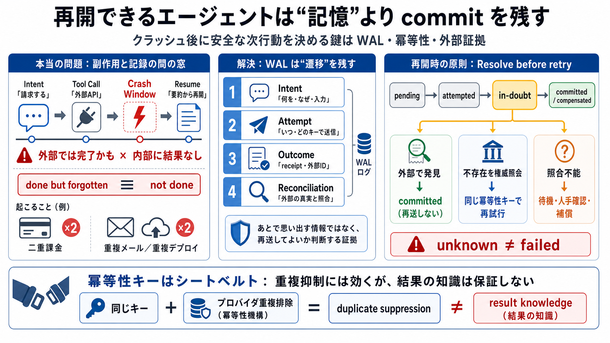

危険な瞬間がある
APIは成功したが、その結果をエージェント側へ永続化する前にプロセスが停止する。

Memory is not recovery
外部操作の直後にクラッシュしても、安全に次の行動を決められるか。鍵は要約量ではなく、WAL・冪等性・外部証拠による回復設計にある。
The real failure
本質は、クラッシュやタイムアウトの後に「外部への副作用が完了したか」を安全に復元できないことだ。
APIは成功したが、その結果をエージェント側へ永続化する前にプロセスが停止する。
「完了したが忘れた」と「まだ実行していない」が、同じ内部状態に見える。
二重請求、二重デプロイ、重複メール、重複投稿などの外部被害へ直結する。
Crash between facts
ツール実行と結果保存は、通常ひとつの原子的トランザクションではない。この隙間が「外部では完了、内部では未完了」を生む。
金額と対象を決定する。
外部システムで副作用が発生する。
成功した可能性はあるが、receiptを保存できない。
「請求が必要」とだけ残っている。
Two histories, one memory
“done but forgotten” と “not done” が同じスナップショットになるなら、再開ロジックは正しい選択をできない。
Summary versus recovery
構造化メモリは理解を助ける。WAL（Write-Ahead Log／書き込み先行ログ）は、障害後の行動を決める証拠を残す。
| 観点 | 要約ベースのメモリ | 遷移ログとしてのWAL |
|---|---|---|
| 中心対象 | 会話、事実、目標、推論結果 | 意図、試行、結果、確認、順序 |
| 得意な問い | 「何を知っていたか」 | 「何を実行し、何が確定したか」 |
| 障害後 | 意味を再構成して推測する | 記録済み状態から回復手順を選ぶ |
| 再試行判断 | 曖昧になりやすい | 証拠と状態機械で許可・禁止する |
Four durable transitions
不可逆な外部操作ごとに、意図から確認までを別々の遷移として永続化する。
何を、なぜ、どの入力で実行するか。
いつ、どのキーで、何回目を送ったか。
応答、外部ID、receiptを何として観測したか。
外部の真実と照合し、最終状態を確定する。
「あとで思い出せる情報」ではなく、再開時に同じ副作用を起こしてよいか判断できる証拠を先に残す。
Unknown is a real state
成功・失敗だけでは、タイムアウト後の現実を表せない。未確定状態を第一級の状態として保持する。
意図は記録済み。外部呼び出しの試行記録はない。
送信開始は記録済み。応答の永続化はまだ確定していない。
副作用は起きた可能性があるが、十分な証拠がない。
外部IDや照合結果により、完了を証明できる。
取消・返金・ロールバックなどの補償操作が確定した。
Write before action
外部操作の前に再現可能な意図を残し、操作後はreceiptを確定してから次の依存行動へ進む。
論理操作を一意に表す operation_id と idempotency key を作る。
入力ハッシュ、対象、期待効果、判断根拠を外部呼び出し前に保存する。
試行番号、時刻、宛先、同じ冪等性キーを記録して送信する。
ステータス、外部ID、receipt、応答ハッシュを耐久化する。
成功の証拠が十分な場合だけ、論理操作を完了扱いにする。
確定状態を前提とする通知や次工程を、コミット後に初めて開始する。
Seatbelt, not certainty
idempotency key（冪等性キー）は同一操作の重複生成を抑える。しかし、結果を知ることや安全な次状態を決めることまでは保証しない。
同一キーを再利用し、プロバイダが保持期間内に正しく重複排除すれば、再送されても副作用を一件へ収束できる。
タイムアウト時に成功したか、キーが期限切れか、外部側でどのIDへ対応したかは、別の照合モデルが必要になる。
Resolve before retry
再開時の既定動作は「もう一度呼ぶ」ではない。外部の真実を問い合わせ、証拠に応じて分岐する。
Attemptはあるが、成功・失敗を確定できるreceiptがない。自動再試行は一時停止する。
External truth wins
内部の要約より、実際に副作用を管理する外部システムのreceiptや照会結果を優先する。
署名付き応答、決済ID、デプロイIDなど、外部結果を直接示す証拠。
operation IDや冪等性キーによる、外部システムへの状態照会。
送信ログ、キューのack、ネットワーク記録。到達は示せても副作用完了とは限らない。
目標や推論の要約。理解には有用だが、外部完了の証明には弱い。
Minimum durable record
再現可能な操作識別子、状態遷移、外部証拠を結び付ける。自由文だけでは回復条件を機械判定できない。
operation_id論理操作の一意IDintent_hash入力と目的の固定値tool_provider実行先とAPI版idempotency_key再送時に再利用するキーstatepending / in-doubt等attempt_no試行回数と順序request_hash送信内容の同一性timestamps意図・送信・観測・確定時刻external_id外部側の操作・結果IDreceipt応答本体または参照fresh_until証拠の再確認期限compensation_of取消対象との因果関係Permission, not intuition
復旧判断をLLMの自由推論へ委ねず、現在状態・証拠・外部照会能力から決まるポリシーとして固定する。
| 現在状態 | 利用できる証拠 | 判断 | 再開アクション |
|---|---|---|---|
| pending | Attempt記録なし | 実行を許可 | キーを固定して初回送信 |
| attempted | 有効な成功receiptあり | 再送を禁止 | committedへ遷移 |
| in-doubt | 外部照会で結果を発見 | 再送を禁止 | 外部IDを保存して確定 |
| in-doubt | 権威ある不存在確認＋有効な冪等性 | 条件付き許可 | 同じキーで再送 |
| in-doubt | 照合不能または証拠期限切れ | 自動処理を停止 | 待機・人手確認・補償 |
Same protocol, different proof
WALの原則は共通でも、何をreceiptと認め、どう照合するかは決済・デプロイ・メッセージで異なる。
同じ顧客・金額でも、別キーなら別請求として受理され得る。
リクエスト成功と、対象環境が目的バージョンになったことは別の事実。
送信受付、配送、読了は異なる状態であり、「送れた」を一語に圧縮できない。
Log the irreversible surface
線引きはAPI名や動詞ではなく、外部への可視性、取消可能性、重複時の損害、取得できる証拠で決める。
決済、契約、権限変更。完全なIntent／Attempt／receipt／reconciliationと人手経路を必須にする。
メール、投稿、ジョブ投入。WALと冪等性キー、外部ID検索を組み合わせる。
一時ファイルや再計算可能な中間生成物。軽量チェックポイントと上書き規則で扱える。
副作用WALは不要でも、観測時刻・出典・鮮度を残し、古い事実への依存を防ぐ。
Durability is not truth
WALは順序と耐久性を守るが、その判断根拠が今も正しいことまでは保証しない。
Intent、Attempt、外部receipt、コミット順序を記録し、障害前後で同じ操作履歴を復元する。
出典、観測時刻、有効期限、矛盾イベント、非推奨化を持ち、新証拠で古い信念を更新する。
Evidence has a lifetime
永続化された情報も永遠に有効とは限らない。意思決定の危険度に応じて再確認期限を定める。
出典と観測時刻が明確で、対象判断に利用できる。
期限を超過。行動前に外部状態を再照会する。
矛盾する新証拠が出現。古い信念を削除せず非推奨化する。
確定済み取引IDや署名済み履歴。ただし外部保存期間は確認する。
確定履歴は残るが、現在の稼働版は後続操作で変化する。
変化が速く、危険な行動の直前に再確認すべき情報。
Compression is interpretation
compactionは、どの過去を将来の判断に残すかという意味変更だ。復旧に必要な因果と証拠を検証可能な形で引き継ぐ。
現在のcommitted状態を支える遷移とreceiptを特定する。
状態だけでなく、根拠・外部ID・出典ログ範囲を含める。
どの入力ログから、どの規則で圧縮したか固定する。
削除ではなく、新しいpublicationとしてmeta-WALへ残す。
元ログなしでも同じ再実行可否を判定できるか検証する。
Reliability is an operating policy
未確定を検出しても、照合期限・人手経路・監査・セキュリティがなければ、in-doubtが蓄積するだけだ。
不可逆操作を列挙し、状態遷移、禁止遷移、同一キー再利用をコードで強制する。
reconciliation deadline、再試行間隔、最大待機時間、人手確認条件を定義する。
in-doubt件数、滞留時間、重複抑止数、補償率、照合失敗を監視する。
receiptの改ざん防止、秘密情報の分離、保持期限、アクセス履歴、説明責任を設計する。
Safe continuation
信頼できるエージェントは、過去を上手に要約するだけではない。外部の真実と照合し、安全に次の一手を選べる遷移を残す。
副作用の前に、操作ID・入力・冪等性キーを耐久化する。
結果不明を失敗へ潰さず、照合または人手確認へ送る。
receiptと権威ある照会を、要約や推測より優先する。
Listen to But It Wasn't That Long Ago on Spotify. Song · Corniglia · 2017. On/Off Album • 2019 A Lost Forgotten
Yung Lean - Ginseng Strip 2002 (Lyrics) | b come and go but you know i stay · Comments.
Have you ever been confused about when to use before and when to use ago? Learn how to use BEFORE and AGO correctly and …
1. The lights are on but no one is home. 2. Adam tried his best but ultimately failed. 3. I know how to dance but as you…
Do I use a comma but when it connects a clause like "I have had a dog(,) but never had a cat" If the same sentence was …